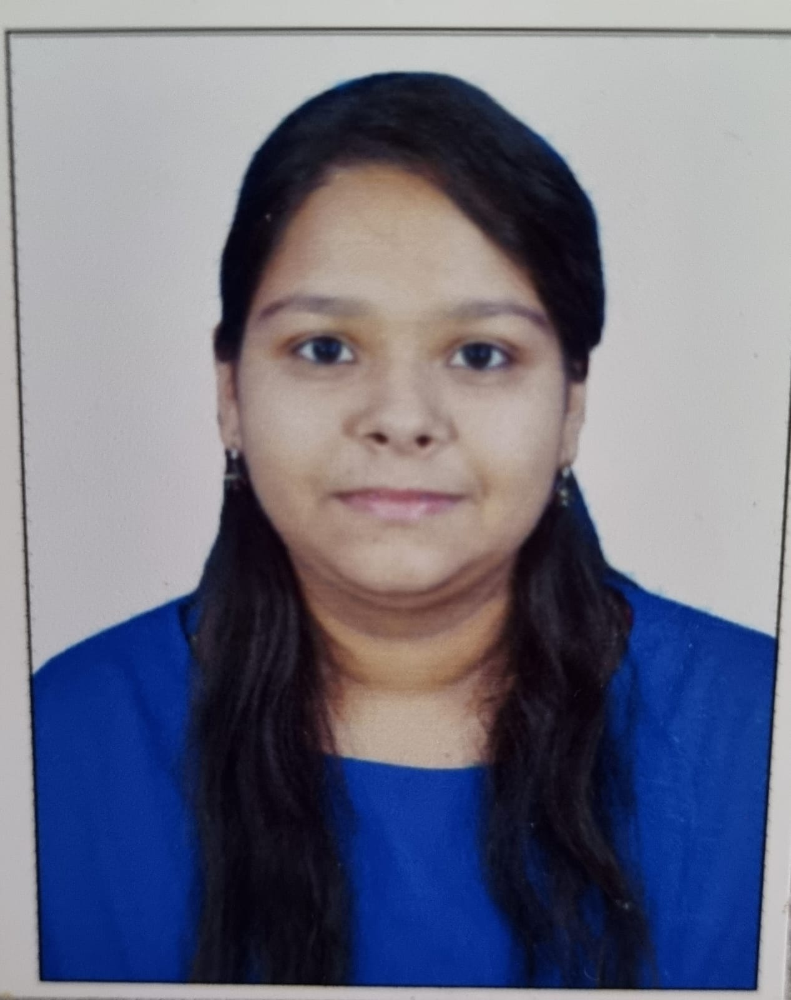

Contact:mahakrastogi045@gmail.com
Linkedin: Mahak
 As a recent graduate with a B.Tech in Computer Science, I'm passionate about technology and eager to embark on a promising journey in the industry. While I may be a fresher, my education has equipped me with a strong foundation in computer science, problem-solving skills, and a desire to learn and grow. I'm proficient in languages such as Java, Python, and C++, and I have hands-on experience with web development technologies like HTML, CSS, and JavaScript. I've also had the opportunity to work on projects such as a Driver Card with QR Code Identification app, Hand Gesture Detection using machine learning and CNN, and an innovative mental health app called 'Mentally.' I'm enthusiastic about contributing to a dynamic team and am confident in my ability to adapt to new challenges in a professional setting. I believe that every challenge is an opportunity for growth, and I'm committed to leveraging my knowledge and skills to make a meaningful impact. I'm on a continuous quest for knowledge and innovation, and I'm excited to collaborate with professionals in the field. Let's connect and explore how we can work together to create innovative solutions and drive progress in the ever-evolving world of technology.
22
Purple
Ghaziabad